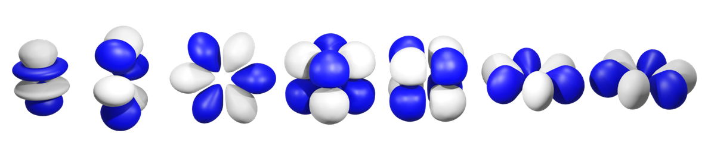

Inorganic Synthetic Chemistry - From the main group to the actinides
I am currently a postdoctoral researcher working to understand the properties of the f-block elements at Lawrence Berkeley National Laboratory and University of California Berkeley in Prof. P. Arnold's group. I obtained my PhD in 2018 after working with Dr. Michael Cowley at the University of Edinburgh on reactive phosphorus and boron containing molecules. I spent a year in industry with Johnson Matthey developing improved plant processes during my MChem degree.
Research Interests
I am currently working on multiple projects in the P. Arnold group, ranging from rare earth separations to fundamental heavy element chemistry. One aim that unites my research projects is to improve our understanding of the basic properties of the f-block elements. This understanding is vital so that we can better separate our waste streams, can predict the properties of f-element containing functional materials and for understanding the chemistry at the very limits of the periodic table.
My PhD work with the Cowley group was on phosphorus-boron multiple bonds. As well as working to increase our understanding of the reactivity of the P=B bond towards other unsaturated bonds, I developed new routes towards these highly reactive species and their precursors.
Check out my publications here
Other Interests
I love to learn; whether that's coding, embroidery, a language or the piano, I'm always teaching myself a skill or learning something new about the world.
I climb (bouldering or top rope), hike, camp and hang out with my friends in my spare time. On rainy days you'll find me baking with my son in the kitchen; I think there's nothing better than an empire biscuit to lift those rainy day blues!